時間的型態有兩個，分別是Date 和 Timestamp，當資料的時間型態是這兩個時，可以運用一些函數對時間進行分析和計算。
Example
Date : ‘ 2022-08-03 '
Timestamp : ‘ 2022-08-03 14:32:40 '
後面會介紹：
Date Functions | Timestamp Functions | |
current_date | year | current_timestamp |
date_format | quarter | hour |
to_date | month | minute |
add_months | dayofweek | second |
date_add | dayofmonth | to_timestamp |
datediff | dayofyear | |
months_between | weekofyear | |
next_day | last_day | |
trunc | from_unixtime | |
date_trunc | unix_timestamp | |
Date Functions 有：
current_date | next_day | dayofmonth |
date_format | trunc | dayofyear |
to_date | date_trunc | weekofyear |
add_months | year | last_day |
date_add | quarter | from_unixtime |
datediff | month | unix_timestamp |
months_between | dayofweek |
接下來會一一介紹～
current_date()
回傳當日日期
Example
> SELECT current_date();
2022-08-04
> SELECT current_date;
2022-08-04Example
將當天日期 current date 擺在資料的第一欄
%sql
SELECT current_date, *
FROM NYC_CitiBike.DATE_HANDLING
LIMIT 100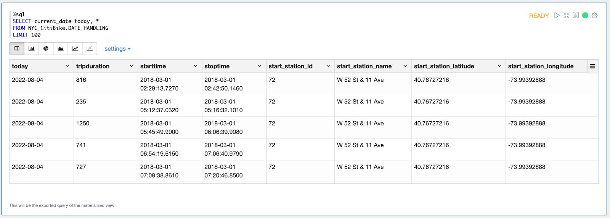
date_format(timestamp, fmt)
- Converts timestamp to a value of string in the format specified by the date format fmt.
- 將 timestamp 資料依照特定的日期格式fmt，選取需要部分，轉換成 srting
Arguments:
timestamp- A date/timestamp or string to be converted to the given format.fmt- Date/time format pattern to follow. See Datetime Patterns for valid date and time format patterns.
Example
> SELECT date_format('2016-04-08', 'y');
2016Example
可以選取資料型態為 date 或 timestamp 的年月日、時分秒 等等
%sql
SELECT starttime_as_timestamp,
date_format(starttime_as_timestamp, 'yyyy') year,
date_format(starttime_as_timestamp, 'MM') month,
date_format(starttime_as_timestamp, 'dd') day,
date_format(starttime_as_timestamp, 'HH') hour,
date_format(starttime_as_timestamp, 'mm') minute,
date_format(starttime_as_timestamp, 'ss') second
FROM NYC_CitiBike.DATE_HANDLING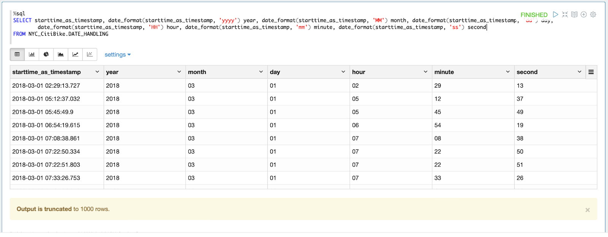
Example
也可以將月份回傳成英文縮寫形式，或是英文全名
%sql
SELECT starttime_as_timestamp, date_format(starttime_as_timestamp, 'MMM d') Month_Day
FROM NYC_CitiBike.DATE_HANDLING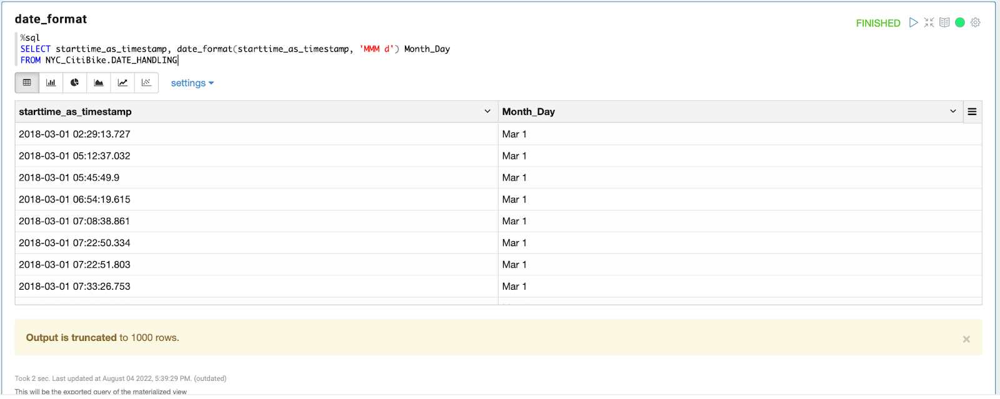
to_date(date_str[, fmt])
可以將 string 字串型態的日期資料改成 date 型態的資料
Example
> SELECT to_date('2009-07-30 04:17:52');
2009-07-30
> SELECT to_date('2016-12-31', 'yyyy-MM-dd');
2016-12-31Example
可以將 table 內資料型態為 string 的資料，轉換成 date 型態的資料，並儲存成一個新的欄位
%sql
SELECT starttime, to_date(starttime) date_formats
FROM NYC_CitiBike.DATE_HANDLING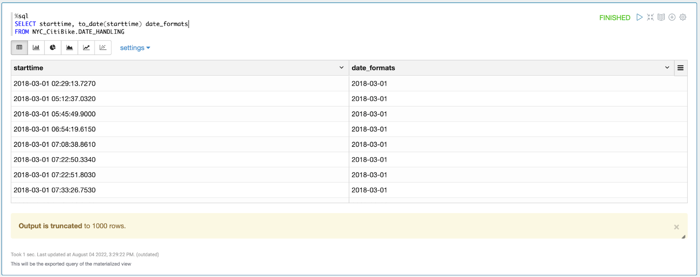
add_months(start_date, num_months)
- Returns the date that is num_months after start_date.
可以加月份，回傳所指定的月數後的日期，回傳在start_date num_months月後的日期
Example
資料是2016-08-31，想知道1個月後的日期，可以用以下程式碼，得2016-09-30
> SELECT add_months('2016-08-31', 1);
2016-09-30Example
以原來的日期加上一個月，新增成新的一欄
%sql
SELECT starttime_as_timestamp, add_months(starttime_as_timestamp, 1) 1_month_after_starttime
FROM NYC_CitiBike.DATE_HANDLING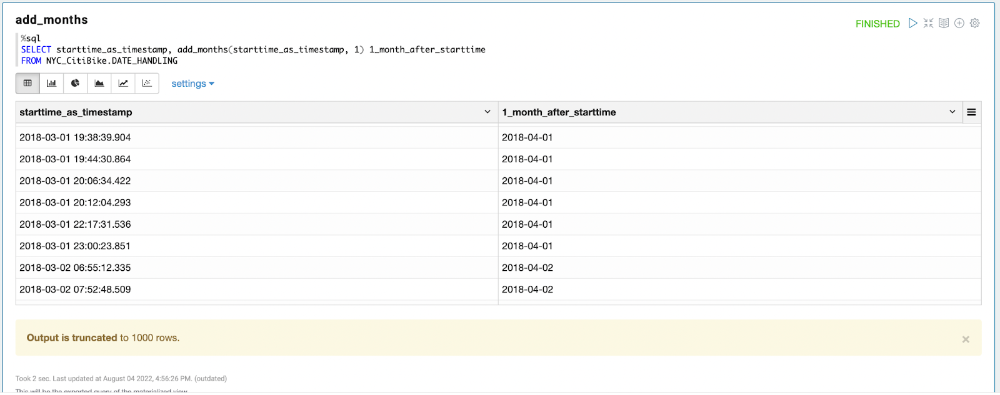
date_add(start_date, num_days)
- Returns the date that is num_days after start_date.
可以加日期，回傳所指定天數後的日期，回傳在start_date num_days天後的日期
Example
資料是2016-07-30，想知道1天後的日期，可以用以下程式碼，得2016-07-31
> SELECT date_add('2016-07-30', 1);
2016-07-31Example
以原來的日期加上一天，新增成新的一欄
%sql
SELECT starttime_as_timestamp, date_add(starttime_as_timestamp, 1) 1_day_after_starttime
FROM NYC_CitiBike.DATE_HANDLING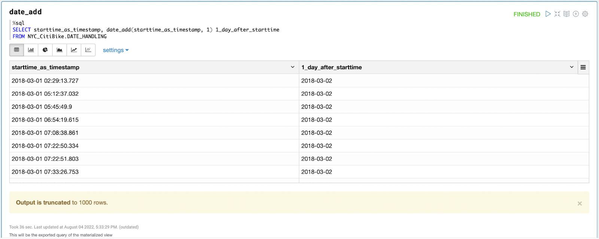
datediff(endDate, startDate)
- Returns the number of days from startDate to endDate.
計算兩個日期之間的天數
Example
> SELECT datediff('2009-07-31', '2009-07-30');
1
> SELECT datediff('2009-07-30', '2009-07-31');
-1Example
利用 datediff 函數計算 trip 開始到結束的天數，可得知車被借了多少天
%sql
SELECT starttime_as_timestamp, stoptime_as_timestamp, datediff(stoptime_as_timestamp, starttime_as_timestamp) duration
FROM NYC_CitiBike.DATE_HANDLING
ORDER BY duration DESC 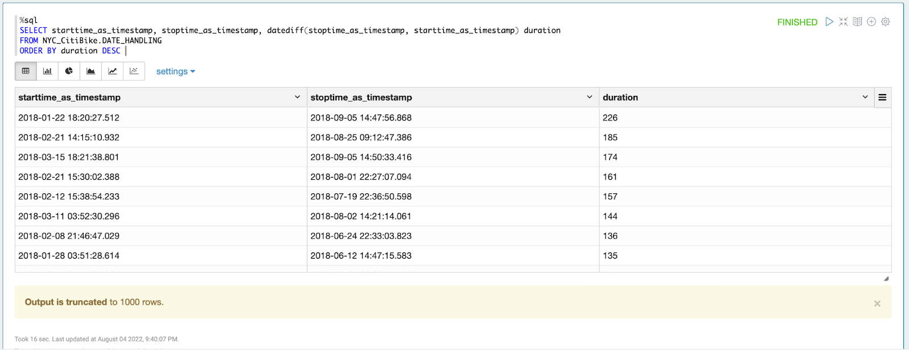
Example
計算每站最大（最近期）和最小（最久遠）被使用的時間差，可以得知車站到目前為止被使用了多少天
%sql
SELECT start_station_id, start_station_name, max(starttime_as_timestamp) latest_day,
min(starttime_as_timestamp) start_day, datediff(max(starttime_as_timestamp), min(starttime_as_timestamp)) duration_day
FROM NYC_CitiBike.DATE_HANDLING
GROUP BY start_station_id, start_station_name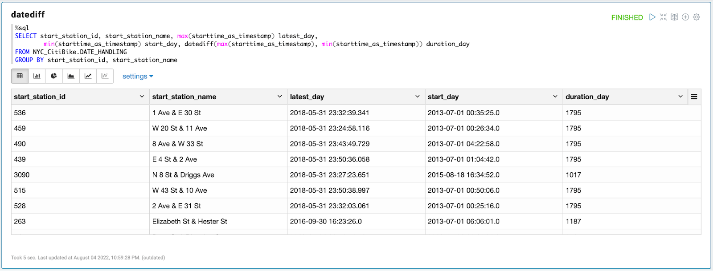
months_between(timestamp1, timestamp2[, roundOff])
- If timestamp1 is later than timestamp2, then the result is positive. If timestamp1 and timestamp2 are on the same day of month, or both are the last day of month, time of day will be ignored. Otherwise, the difference is calculated based on 31 days per month, and rounded to 8 digits unless roundOff=false.
計算兩個時間之間差距的月份
- 如果
timestamp1比timestamp2晚的話，結果會是正數，反之，則是負數 - 如果
timestamp1和timestamp2日期是同一天，或是兩個都是當月的最後一天的話，當天的時間會被忽略不計，否則，會以31天一個月計算到小數點第8位。 - 如果有加上 roundOff=false ，則不會四捨五入
Example
> SELECT months_between('1997-02-28 10:30:00', '1996-10-30');
3.94959677
> SELECT months_between('1997-02-28 10:30:00', '1996-10-30', false);
3.9495967741935485Example
計算每站最大（最近期）和最小（最久遠）被使用的時間差，可以得知車站到目前為止被使用了多少個月
%sql
SELECT start_station_id, start_station_name, months_between(max(starttime_as_timestamp), min(starttime_as_timestamp)) duration_month
FROM NYC_CitiBike.DATE_HANDLING
GROUP BY start_station_id, start_station_name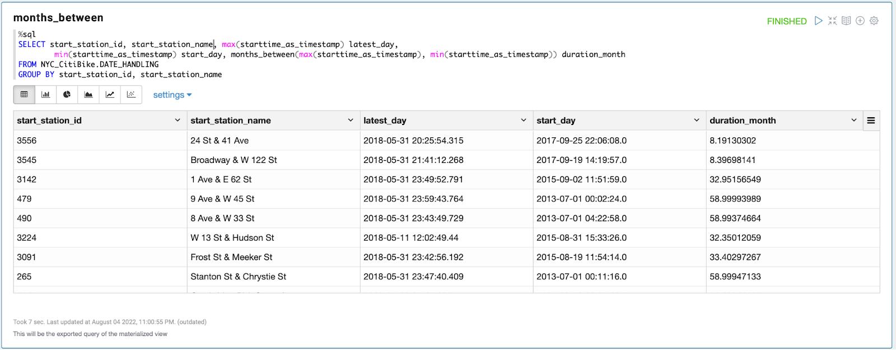
next_day(start_date, day_of_week)
找到指定日期 start_date 的下一個 day_of_week 星期一、二、三、四、...
Example
找到 2015-01-14 的下一個星期四 'TU'
> SELECT next_day('2015-01-14', 'TU');
2015-01-20Example
找到每個時間點的下一個星期一'MON'
%sql
SELECT starttime_as_timestamp, next_day(starttime_as_timestamp, 'MON') next_monday
FROM NYC_CitiBike.DATE_HANDLING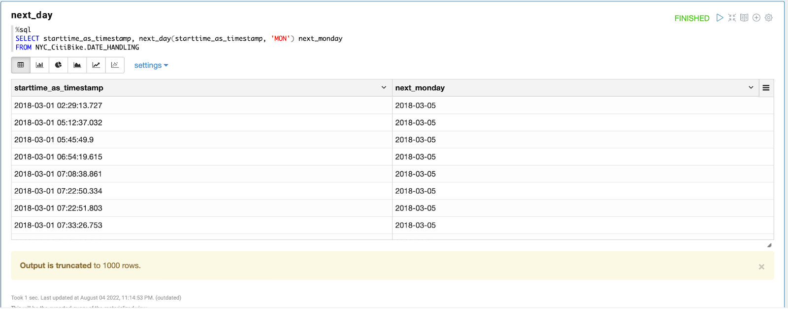
trunc(date, fmt)
- Returns date with the time portion of the day truncated to the unit specified by the format model fmt.
回傳 date 在 fmt 區間裡面最早的那個日期
Arguments:
date- date value or valid date stringfmt- the format representing the unit to be truncated to- "YEAR", "YYYY", "YY" - truncate to the first date of the year that the
datefalls in - "QUARTER" - truncate to the first date of the quarter that the
datefalls in - "MONTH", "MM", "MON" - truncate to the first date of the month that the
datefalls in - "WEEK" - truncate to the Monday of the week that the
datefalls in
Example
2019-08-04 在 week 區間裡面最早的那個日期是 2019-07-29
→ 換句話說，2019-08-04 是在以 2019-07-29 為首的一週內
2019-08-04 在 quarter 區間裡面最早的那個日期是 2019-07-01
→ 換句話說，2019-08-04 是在以 2019-07-01 為首的一季內
2009-02-12 在 month 區間裡面最早的那個日期是 2019-02-01
→ 換句話說，2009-02-12 是在以 2019-02-01 為首的一週內
2015-10-27 在 year 區間裡面最早的那個日期是 2015-01-01
→ 換句話說，2015-10-27 是在以 2015-01-01 為首的一週內
> SELECT trunc('2019-08-04', 'week');
2019-07-29
> SELECT trunc('2019-08-04', 'quarter');
2019-07-01
> SELECT trunc('2009-02-12', 'MM');
2009-02-01
> SELECT trunc('2015-10-27', 'YEAR');
2015-01-01Example
找出 starttime 日期相對應的一週
%sql
SELECT starttime_as_timestamp, trunc(starttime_as_timestamp, 'week') year_month_week
FROM NYC_CitiBike.DATE_HANDLING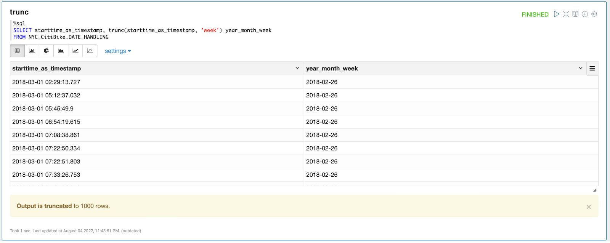
Example
可以利用 trunc 函數找出相對應的週，在計算車輛被使用的次數 (counts of trips)，畫出每週對於使用次數趨勢
%sql
SELECT trunc(starttime_as_timestamp, 'week') year_month_week, COUNT(*) counts_of_trips
FROM NYC_CitiBike.DATE_HANDLING
GROUP BY year_month_week
ORDER BY year_month_week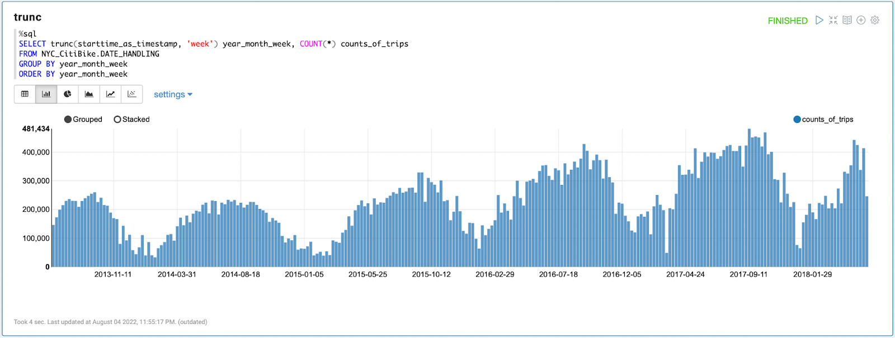
date_trunc(fmt, ts)
- Returns timestamp ts truncated to the unit specified by the format model fmt.
回傳 ts 在 fmt 區間裡面最早的那個日期或是時間
Arguments:
fmt- the format representing the unit to be truncated to- "YEAR", "YYYY", "YY" - truncate to the first date of the year that the
tsfalls in, the time part will be zero out - "QUARTER" - truncate to the first date of the quarter that the
tsfalls in, the time part will be zero out - "MONTH", "MM", "MON" - truncate to the first date of the month that the
tsfalls in, the time part will be zero out - "WEEK" - truncate to the Monday of the week that the
tsfalls in, the time part will be zero out - "DAY", "DD" - zero out the time part
- "HOUR" - zero out the minute and second with fraction part
- "MINUTE"- zero out the second with fraction part
- "SECOND" - zero out the second fraction part
- "MILLISECOND" - zero out the microseconds
- "MICROSECOND" - everything remains
ts- datetime value or valid timestamp string
Example
> SELECT date_trunc('YEAR', '2015-03-05T09:32:05.359');
2015-01-01 00:00:00
> SELECT date_trunc('MM', '2015-03-05T09:32:05.359');
2015-03-01 00:00:00
> SELECT date_trunc('DD', '2015-03-05T09:32:05.359');
2015-03-05 00:00:00
> SELECT date_trunc('HOUR', '2015-03-05T09:32:05.359');
2015-03-05 09:00:00
> SELECT date_trunc('MILLISECOND', '2015-03-05T09:32:05.123456');
2015-03-05 09:32:05.123Example
找出 starttime 相對應的小時
%sql
SELECT starttime_as_timestamp, date_trunc('hour', starttime_as_timestamp) hour_of_day
FROM NYC_CitiBike.DATE_HANDLING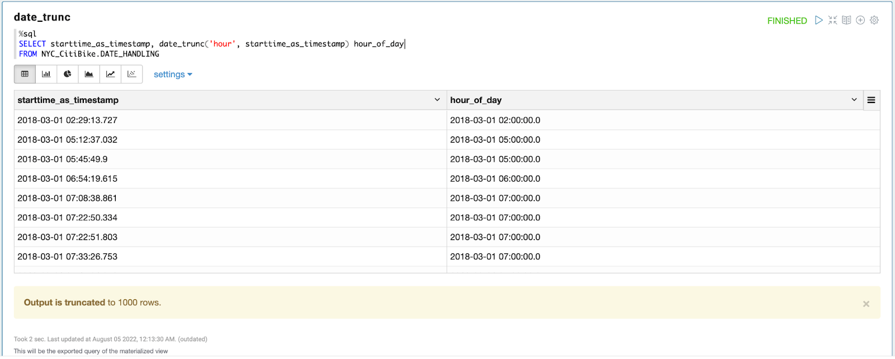
year(date)
- Returns the year component of the date/timestamp.
回傳指定日期的年份
Example
> SELECT year('2016-07-30');
2016Example
利用 year 函數，找出starttime的年份
%sql
SELECT starttime_as_timestamp, year(starttime_as_timestamp) year
FROM NYC_CitiBike.DATE_HANDLING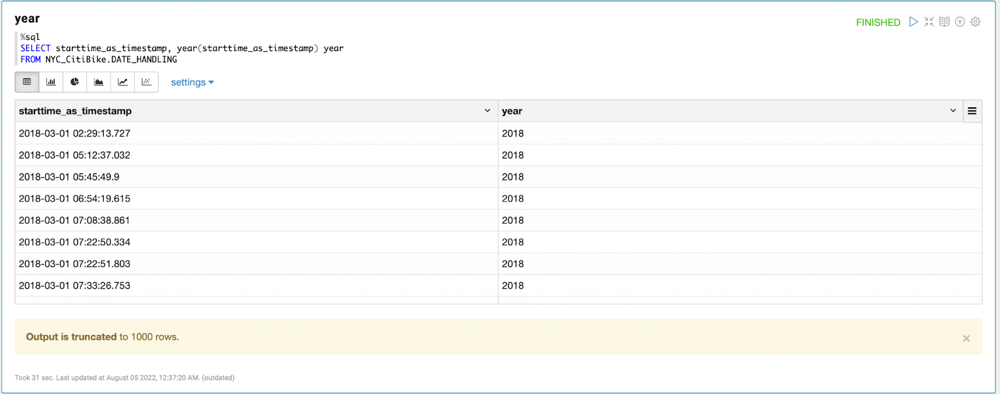
quarter(date)
- Returns the quarter of the year for date, in the range 1 to 4.
回傳指定日期的季：1-4
Example
> SELECT quarter('2016-08-31');
3Example
利用 quarter 函數，找出starttime的季次
%sql
SELECT starttime_as_timestamp, quarter(starttime_as_timestamp) quarter
FROM NYC_CitiBike.DATE_HANDLING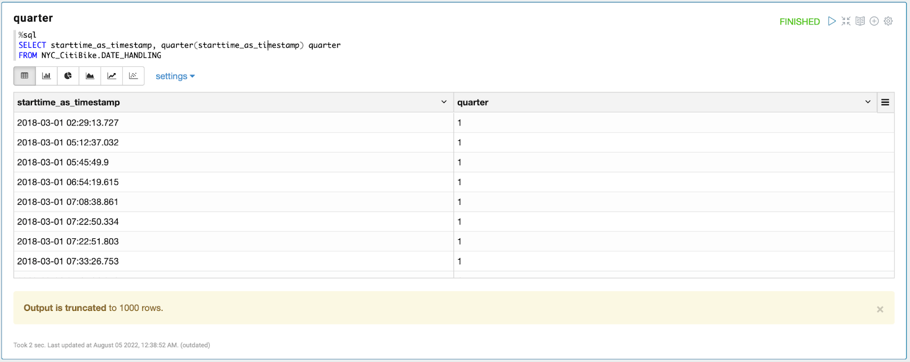
month(date)
- Returns the month component of the date/timestamp.
回傳指定日期的月份
Example
> SELECT month('2016-07-30');
7Example
利用 month 函數，找出starttime的月份
%sql
SELECT starttime_as_timestamp, month(starttime_as_timestamp) month
FROM NYC_CitiBike.DATE_HANDLING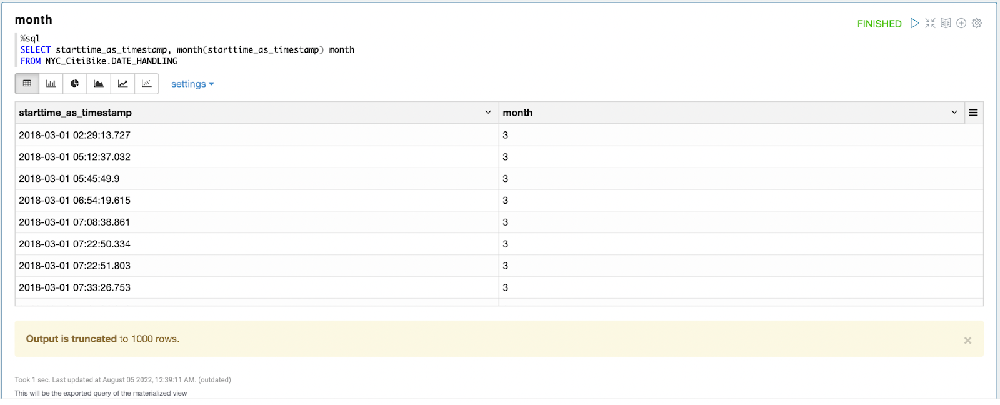
dayofweek(date)
- Returns the day of the week for date/timestamp (1 = Sunday, 2 = Monday, ..., 7 = Saturday).
回傳指定日期的星期，1 = 星期日，2 = 星期一，3 = 星期二，4 = 星期三，...，7 = 星期六
Example
> SELECT dayofweek('2009-07-30');
5Example
利用 dayofweek 函數，找出starttime的星期
%sql
SELECT starttime_as_timestamp, dayofweek(starttime_as_timestamp) day_of_week
FROM NYC_CitiBike.DATE_HANDLING
dayofmonth(date)
- Returns the day of month of the date/timestamp.
回傳指定日期的在一個月當中的日
Example
> SELECT dayofmonth('2009-07-30');
30Example
利用 dayofmonth 函數，找出starttime的一個月當中的日
%sql
SELECT starttime_as_timestamp, dayofmonth(starttime_as_timestamp) day_of_month
FROM NYC_CitiBike.DATE_HANDLING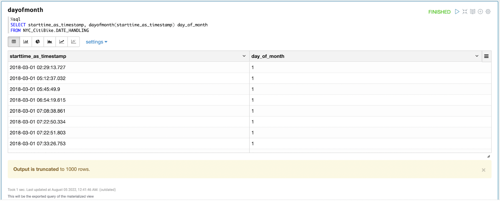
dayofyear(date)
- Returns the day of year of the date/timestamp.
回傳指定日期的在一年當中的日
Example
> SELECT dayofyear('2016-04-09');
100Example
利用 dayofyear 函數，找出starttime的一年當中的日
%sql
SELECT starttime_as_timestamp, dayofyear(starttime_as_timestamp) day_of_year
FROM NYC_CitiBike.DATE_HANDLING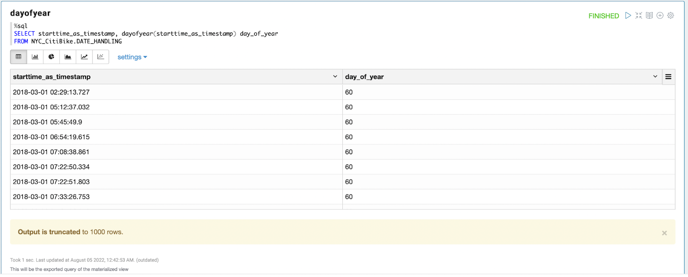
weekofyear(date)
- Returns the week of the year of the given date.
- A week is considered to start on a Monday and week 1 is the first week with >3 days.
回傳指定日期的在一年中的週次
Example
> SELECT weekofyear('2008-02-20');
8Example
利用 weekofyear 函數，找出starttime的一年當中的週次
%sql
SELECT starttime_as_timestamp, weekofyear(starttime_as_timestamp) week_of_year
FROM NYC_CitiBike.DATE_HANDLING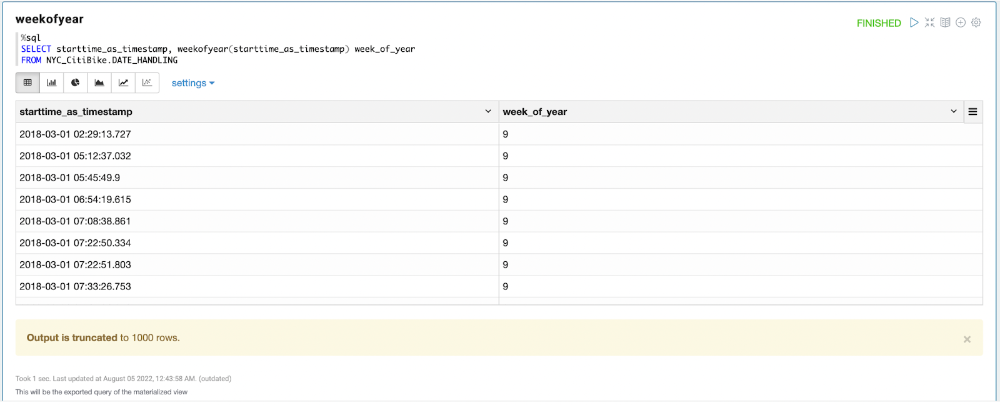
last_day(date)
- Returns the last day of the month which the date belongs to.
回傳指定日期 date 所在月份中的最後一天
Example
> SELECT last_day('2009-01-12');
2009-01-31Example
%sql
SELECT starttime_as_timestamp, last_day(starttime_as_timestamp) last_day_of_month
FROM NYC_CitiBike.DATE_HANDLING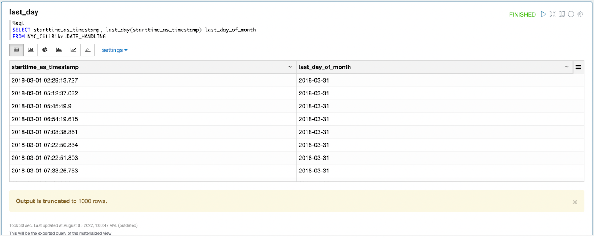
from_unixtime(unix_time[, fmt])
- Returns unix_time in the specified fmt.
此函數會根據 unix time 回傳所提供之格式 fmt
Arguments
unix_time- UNIX Timestamp to be converted to the provided format.fmt- Date/time format pattern to follow. See Datetime Patterns for valid date and time format patterns. The 'yyyy-MM-dd HH:mm:ss' pattern is used if omitted.
Example
> SELECT from_unixtime(0, 'yyyy-MM-dd HH:mm:ss');
1969-12-31 16:00:00
> SELECT from_unixtime(0);
1969-12-31 16:00:00unix_timestamp([timeExp[, fmt]])
- Returns the UNIX timestamp of current or specified time.
此函數會根據時間或所提供之格式 fmt 回傳 unix time
Example
> SELECT unix_timestamp();
1476884637
> SELECT unix_timestamp('2016-04-08', 'yyyy-MM-dd');
1460041200Example
利用 unix_timestamp 函數，將 timestamp 形式的 starttime 轉換成 unix time 形式
%sql
SELECT starttime_as_timestamp, unix_timestamp(starttime_as_timestamp) unix
FROM NYC_CitiBike.DATE_HANDLING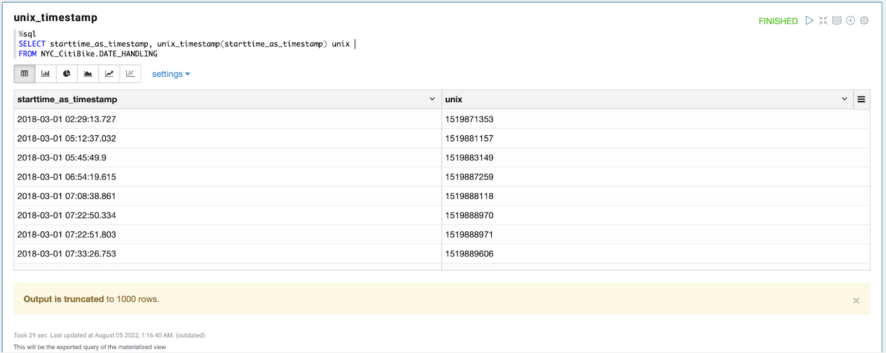
Timestamo Functions 有：
current_timestamp |
hour |
minute |
second |
to_timestamp |
接下來會一一介紹～
current_timestamp()
current_timestamp
- Returns the current timestamp at the start of query evaluation. All calls of current_timestamp within the same query return the same value.
此函數會回傳現在當下的時刻，包括：年月日、時分秒、毫秒
Example
> SELECT current_timestamp();
2020-04-25 15:49:11.914
> SELECT current_timestamp;
2020-04-25 15:49:11.914Example
利用 current_timestamp 函數，新增一欄現在時刻
%sql
SELECT starttime_as_timestamp, current_timestamp() current_time
FROM NYC_CitiBike.DATE_HANDLING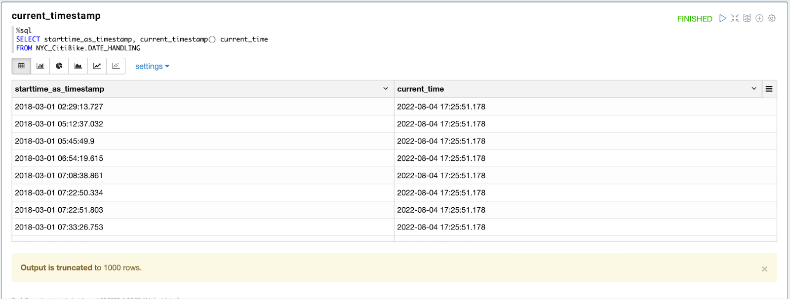
Example
利用 current_timestamp 函數，回傳現在時刻，再利用 datediff 函數計算每個車站最早有被使用的時間到現在，總共經歷了幾天，以 start station 分類
%sql
SELECT start_station_id, start_station_name,
min(starttime_as_timestamp) start_time,
current_timestamp() current_time,
datediff(current_timestamp(),
min(starttime_as_timestamp)) open_duration_day
FROM NYC_CitiBike.DATE_HANDLING
GROUP BY 1,2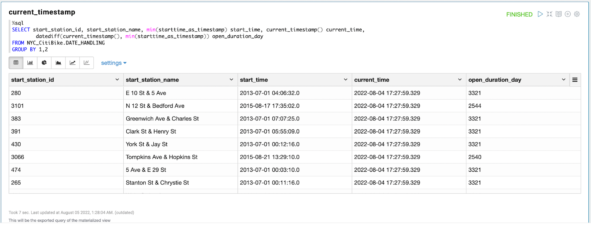
hour(timestamp)
- Returns the hour component of the string/timestamp.
回傳指定時間的小時
Example
> SELECT hour('2009-07-30 12:58:59');
12Example
利用 hour 函數，找出starttime的在一天當中的小時
%sql
SELECT starttime_as_timestamp, hour(starttime_as_timestamp) Hour
FROM NYC_CitiBike.DATE_HANDLING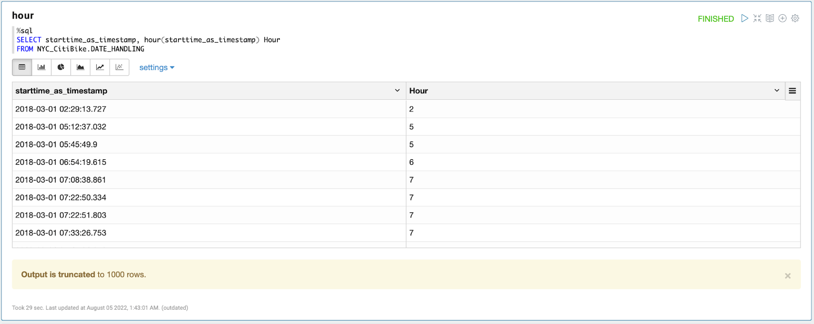
minute(timestamp)
- Returns the minute component of the string/timestamp.
回傳指定時間的分鐘
Example
> SELECT minute('2009-07-30 12:58:59');
58Example
利用 minute 函數，找出starttime的分鐘
%sql
SELECT starttime_as_timestamp, minute(starttime_as_timestamp) Minute
FROM NYC_CitiBike.DATE_HANDLING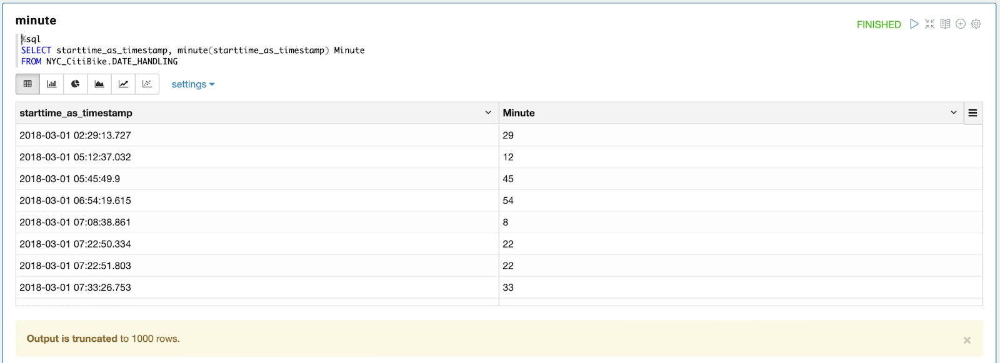
second(timestamp)
- Returns the second component of the string/timestamp.
回傳指定時間的秒數
Example
利用 second 函數，找出starttime的秒數
> SELECT second('2009-07-30 12:58:59');
59Example
%sql
SELECT starttime_as_timestamp, second(starttime_as_timestamp) Second
FROM NYC_CitiBike.DATE_HANDLINGto_timestamp(timestamp_str[, fmt])
- Parses the timestamp_str expression with the fmt expression to a timestamp. Returns null with invalid input. By default, it follows casting rules to a timestamp if the fmt is omitted. The result data type is consistent with the value of configuration spark.sql.timestampType.
將符合格式的字串轉換成 timestamp ，也可以給特定格式，將他轉換成 timestamp
Example
> SELECT to_timestamp('2016-12-31 00:12:00');
2016-12-31 00:12:00
> SELECT to_timestamp('2016-12-31', 'yyyy-MM-dd');
2016-12-31 00:00:00Example
%sql
SELECT CASE WHEN translate(starttime, '1234567890','##########') ='##/##/#### ##:##:##'
THEN to_timestamp(starttime, 'MM/dd/yyyy HH:mm:ss')
END as starttime_as_timestamp, starttime
FROM NYC_CitiBike.tripdata
WHERE translate(starttime, '1234567890','##########') = '##/##/#### ##:##:##'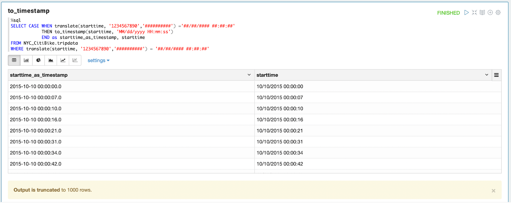
https://spark.apache.org/docs/latest/api/sql/search.html?q=date
https://sparkbyexamples.com/spark/spark-sql-date-and-time-functions/
https://spark.apache.org/docs/latest/sql-ref-datetime-pattern.html